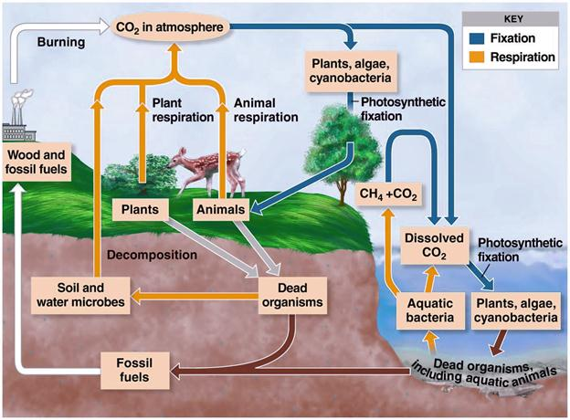

AMBE 101 :: Lecture 16 :: MICROBIAL TRANSFORMATIONS OF CARBON

The term soil generally refers to the loose material of the earth surface and is the region that supports the plant life. It consists of five major components such as mineral matter, water, air, organic matter and living organisms. The proportion of these components varies with soil type and other soil conditions. To maintain the level of these components it is essential that they undergo a regular process of recycling. This process of recycling through various transformations is brought about by different microorganism.
A- PS
B- Respiration / plant
C- Respiration / Animals
D- Autotrophs
E- Respiration / Microbial mineralization

The most important element in the biological realm and substance that serve as the cornerstone of the cell structure is carbon. It constituents about 40-50% of all living organisms, yet the ultimate source is the CO2 that exist in a perennially short supply, only 0.03% of the earth’s atmosphere, which undergo a cyclic change from an oxidized to reduced state.
Carbon (CO2) is constantly (reduced into organic carbon compounds) being fixed into organic form by photosynthetic organisms (photosynthesis). Once bound, the carbon becomes unavailable for use in generation of new plant life. It is thus essential for the carbonaceous materials to be decomposed and returned to the atmosphere. It is estimated that 1.3x1014 kg CO2 is fixed annually in the biosphere. To the lesser extent CO2 is also fixed through the agency of photosynthetic bacteria and other chemolithotrophs with the convertion of so much of the plant available carbon to organic form each year and the limited supply in the air, it is apparent that the major plant nutrient element would become exhausted in the absence of microbial transformation.
The carbon cycle revolves about CO2 and its fixation and regeneration. The green plants utilize CO2 as their sole carbon source, and the carbonaceous matter synthesized serves to supply carbon to other heterotrophic organisms and animals. Upon the death of plants and animals, microbes assume a dominant role in carbon cycle. The dead tissues are degraded and transformed into microbial cells and humus or soil organic fraction. Further decomposition of these materials leads to the production of CO2 and once again it is recycled.
Organic matter decomposition (Aerobic decay)
Soil organic matter
The organic matter subjected to microbial decay in soil comes from several sources like plant remains, forest litter, incorporation of plant and animal tissues and excretory products. The chemistry of organic matter is clearly very complex, and investigations of the transformations and the responsible organisms have therefore been extremely interesting. The organic constituents of the plants are commonly divided into six categories.
a) Cellulose - Most abundant 15-60% of the dry weight
b) Hemicellulose - 10-30% of the plant dry weight
c) Lignin - 5 – 30 % of the plant dry weight
d) Water soluble fraction - 5-30%, included simple sugar, a. acids,
e) Ether and alcohol soluble constituents, a fraction containing fat, oils, waxes, resins and a number of pigments
f) Proteins.
As the plant ages, the content of water soluble constituents, proteins and minerals decreases and the % of abundance of cellulose, hemicellulose and lignin rises.
Soil organic matter comprises residues of plant and animals and these compounds occur in soil in close combination with inorganic substances. Animals and plant residues are made up of complex carbohydrates, simple sugars, starch, cellulose, hemicellulose, pectins, gums, mucilage, proteins fats, oils, waxes, resins, alcohols, aldehydes , ketones, organic acids, lignin, phenols, tannins, hydrocarbons, alkaloids, pigments etc.
- The soil microorganism play important role in the decomposition of soil organic matter.
- Bacteria are the dominant group – mostly heterotrophic organisms (use energy from organic sources such as sugars, starch, cellulose and protein) – are involved. Autotrophic organism which occupy a small portion of the biomass in soil (and use inorganic sources such as Fe and S) are not directly involved in organic matter decomposition.
- Actinomycetes grow on complex substances such as keratin, chitin and other complex polysaccharides and play active role in humus formation.
- Soil fungi are mostly heterotrophos and use organic residues easily
- Soil algae contribute a small amount of organic matter through their biomass, but they do not have any active role in organic matter decomposition.
Organic matter decomposition serves two important functions
a) Provide energy for growth
b) Supply carbon for the formation of new cell materials
Hence only heterotrophs are actively involved in the process of decomposition. The relationship between organic matter and plant growth may be direct or indirect.
- Organic matter is a natural substrate for saprophytic micro organism and provides nutrition to plants indirectly through the activity of soil microorganisms
- It is essential for the formation of soil aggregates and hence soil structure which ultimately determines the soil aeration and rooting habit of plants
- Organic matter helps in the conservation of soil nutrients by preventing erosion and surface run off of nutrients.
Carbon assimilation
The process of converting substrate to protoplasmic carbon is known as assimilation. Under aerobic conditions 20-40% of the substrate carbon is assimilated, the remainder is released as CO2. Fungi are more efficient, in their metabolism, since they convert carbon into cell carbon as filaments and release less of CO2. 30-40% of which is used to form new mycelium during the decomposition. Compared to fungi, bacteira are less efficient. Aerobic bacteria are less efficient than anerobic bacteria.
C. Mineralization
- Conversion of organic Carbon substance to inorganic form of carbon.
Immobilization
Assimilation of nutrients and is the mechanism by which micro organism reduce the quantity of plant available nutrient in soil. Mineralization is considered well than immobilization.
During the decomposition of organic matter three separate simultaneous processes can be distinguished. The important changes during decomposition are:
- Plant and animal tissues constituents disappear under the influence of enzymes
- Synthesis of new microbial cells so that proteins, polysaccharides and nucleic acids typical of bacteria and fungi appear.
- Third, certain end products of the breakdown are excreted into surroundings there to accumulate or to be further metabolized.
Importance of organic matter decomposition
- Important function is the breakdown of organic matter by which CO2 available for photosynthesis is replenished
- Any compound that is synthesized biologically is subject to destruction by soil inhabitants, otherwise the compounds would have accumulated in vast amounts on the earth’s surface
- Since, organic matter degradation is a property of all heterotrophs, it is commonly used to indicate the level of microbial activity.
Methods to evaluate the decomposition rate
- Measurement of CO2 evolution or O2 uptake
- Determination of decrease in organic matter either chemically or by weight loss
- Observations on disappearance of specific constituents such as cellulose, hemicellulose or lignin.
Changes during organic matter decomposition
As a result of development of mixed flora on chemically complex natural products, some components quickly disappear while others are less susceptible to microbial enzymes and persist. The water soluble fraction contains the least resistant plant components and is thus the first to be metabolized. Cellulose and hemicellulose on the other hand disappear not as quickly as water soluble substances, but their persistence usually is not too great. The lignins are highly resistant and consequently become relatively more abundant in the residual, decaying organic matter.
- At aerobic conditions when carbonaceous substrates are incorporated into soil, immediate drop in O2 and an increase in CO2 content of soil air occurs.
- Change in (O) (H) oxidation reduction potential (En) – it is shifted to a more reduced condition (fall in oxidation reduction potential).
The end products of decomposition are - CO2, H2O, NO3, SO4, CH4, NH4 and H2S depending on the availability of air.
Factors influencing the organic matter decomposition
- Organic matter level of the soil
- Cultivation
- Temperature
- Moisture
- pH
- Depth
- Aeration
- Nature and abundance of micro organic involved.
- The extent of availability of C, N, P and K presence of inhibitory substance.
C: N ratio
- Nitrogen is a key nutrient substance for microbial growth
- If N content of the substrate is high it is readily utilized and decomposition is faster
- If N is poor decomposition is slower, needs additional N
- Protein rich substrates are readily decomposed
- Low N or wide C:N ratio results slow decay
- Optimum level of C: ratio for maximum decomposition is 20-25(1.4-1.7% N)
- Less than this range, more microbial cells, faster mineralization and it likely exceeds immobilization
- Wider the ratio, lesser microbial cells, slower the immobilization and mineralization increases gradually, resulting in accumulation of Ammonia and Nitrates
- Microbes scavenge the soil solution to obtain enough N
- At optimum level, there must be an equilibrium between Mineralization and Immobilization
- Soil N level constrains the maintenance of C:N (organic carbon /soil o.m)
- To make sound soil management
- Arable surface -10:1
- Sub soil -lower
Anaerobic decay / decomposition
The main products of aerobic carbon mineralization are CO2, water, cells and humus components. In the absence of O2 organic carbon is incompletely metabolized, intermediary substances accumulate, and abundant quantities of CH4 and smaller amounts of H2 are evolved. Energy yield during anaerobic fermentation is low, resulting in fewer microbial cells per unit of organic carbon degraded. Consequently, organic matter breakdown is consistently slower under total anaerobiosis than in environments containing adequate O2. The rate in water logged soils is intermediate between the two extremes.
When a soil is water logged or flooded there is a shift from aerobic to anaerobic transformation. Formation and accumulation of organic acids viz., acetic, formic, butyric, lactic and succinic acids appear too, these are frequently detrimental to root development. Organic acids accumulate because of the fermentative character of the microflora of wet soils. The an aerobic carbon transformation are thus characterized by the formation of organic acids, alcohols, CH4 and CO2 as major end products.
Under anaerobic conds, decomposition of organic residues takes place by the activity of both mesophilic, thermophilic microorganism resulting in the production of CO2, H, ethyl alcohol, and organic acids. Among mesoophilis, bacteria are more active than fungi or actinomycetes in cellulolytic activity. They belong to genus Clostridium which are numerous in manure pits but rarely encountered in cultivated arable soils. In compost pits both meso and thermopholic (bacterial and actinomycetes) are important in the breakdown of cellulose substances.
The primary microbial colonisers initially break down the complex CH2O and proteins into organic acids and alcohols. At a later stage, the methane bacteria which are strict anaerobes begin to act upon the secondary substrate chiefly lactic and butyric acids and ferment them into CH4 and CO2.
Humus
- A dark coloured and fairly stable soil organic matter with known and unknown physical and chemical properties
- It is an integral part of the organic matter complex in soil
- Humus can be defined as lingo protein complex containing approximately
45 % - lignin compounds
35% - amino acids
11% - carbohydrates
4% - cellulose
7% - Hemicellulose
3% - fats, wax, resins
6% - other miscellaneous substances, including plant growth substances and inhibitors.
- Age and composition of the humus are dependent on its origin and environment.
- Bacterial and algal protoplasm contribute a good deal to the nutritive value of humus
- Soil micro organism take part in humus formation. Some fungi such as Penicillium, Aspergillus and actinomycetes produce dark humus like substances which serve as structural units for the synthesis of humic substances.
Benefits of humic substances
- Improved seed germination, root growth, uptake of minerals by plants and other physiological effects on plant growth
- Increases the enzyme activities involved in plant metabolism. Since humic acid serves as hydrogen acceptors.
- Increases the cytochrome oxidase activity in root systems results in growth stimulatory effect (on roots)
- Chelating effect – on trace elements Fe uptake by roots
- Vigour and yield of plants enhanced
- Humic acid known to influence the grown and proliferation of micro organism
- Aspergillus niger, Peni, Bacillus sp., Azotobacter are enhanced
The organic fraction of soil, often termed humus. It is a product of synthetic and decomposing activities of the microflora. Since it contains the organic C and N needed for microbial development, it is the dominant food reservoir. Because humus is both a product of microbial metabolism and an important food source, the organic fraction is of special interest.
Humus formation
- Once the plant or animal remains fall on or are incorporated into the soil, they are subjected to decomposition
- From the original residues, a variety of products are formed
- As the original materials and the initial products undergo further decomposition, they are converted to brown or black organic complexes
- At this stage any trace of the original remains no longer remains
- The native organic fraction originates from two sources: the original plant debris entering the soil and the micro organism with in the soil body. The micro organism in soil body, work upon the former and synthesize microbial protoplasm and new compounds that become part of the organic fraction.
- Humus exist in a dynamic state
- Chemistry of humus is complex
- It has been pointed out that the organic fraction is derived from
- Plant constituents that are modified by the microflora.
- Constituents of microbial cells and products of microbial metabolism are relatively resistant to decay and therefore persist for sometime after death of organism.
Interms of specific elements
The organic fraction contains compounds of C, H, O, N, P, S and small amounts of other elements. Only a small portion of the total is soluble in water, but much can be brought into solution by alkali.
Interms of type of compounds
Humus contains a number of polymerized substances, aromatic, molecules, polysaccharides, ascorbic acids, polymers of uronic acids and P containing compounds.
No definite composition can be assigned. It should be considered as a portion of the soil that is composed of a heterogenous group of substances, most having an unknown parentage and an unknown chemical structure.
Lignin and lignin derived molecules have long been considered to be of significance in the formation of humus.
It is possible either that simple aromatics released in the microbial attack on lignin polymerize to yield constituents of the soil organic fraction or those partially altered lignins itself give rise to humus constituents. The monomeric portions of humus are similar to the constituents of lignin.
Degradation processes
(1) Cellulose is a CH2O composed of glucose units bound by β-linkage at carbon 1 and 4 of the sugar molecule. The cellulose concentration of higher plants is never fixed and the concentration. It is a polymer of glucose and is might abundant organic material in nature changes with age and type of plants. Woody materials have more cellulose and succulent tissues had poor, but the concentration increases as the plant matures. Cellulose breakdown in soil is influenced by several environmental factors.
Aerobic organism converts cellulose to 2 major products: CO2 + cell substance, but certain group releases small amount of organic acids. It is however resistant to microbial decomposition. When cellulose is associated with pentosans (xylan, mannans) it undergoes rapid decomposition. When associated with lignin, the decomposition rate is very low. Degradation is by the enzymes that converts cellulose into glucose. (Exoenzymes)
Exoglucanase
Endoglucanase
β - glucosidase (cellulse complex)
Exo glucanase
Native cellulose Amorphos cellulose + cellobiose
Endoglucanase Endogluconase
β-glucosidase
D- Glucose Cellobiose
(cellobiase)
Most cellulolytic bacteria do not excrete significant amounts of cellulase but fungi are found to excrete these enzymes. The soluble sugars released by enzymatic hydrolysis are later utilized by the same or other micro organism for biosynthetic purpose.
(2) Hemicellulose
It is a polymer of simple sugars such as pentose, hexose and uronic acids. They may be either homo or hetero polymers. When they are added to soil, degradation takes place at faster rate in initial stages. The hemicelluloses such as mannans are decomposed rapidly while galactons (polymer of galactose) are decomposed slowly. Many soil micro organisms utilize hemicellulose in both aerobic as well as anaerobic conditions. The microbial degradation occurs through the agency of extracellular enzymes called hemicellulases.
(3) Lignin
Lignin is the third most abundant costituent of plants. It consists of heterocyclic aromatic organic molecules containing C, H and O. The degradation is very slow and rate of decomposition depends on the presence of other compounds such as cellulose and hemicellulose acid. Lignin is highly resistant to microbial degradation. Degradation is a complex process.
- Lignin --à coniferyl ether --à coniferyl alcohol --à coniferyl aldehyde --à vanillin --à vannillic acid --à protocatechuic acid --à ring cleavage
Genera of microorganisms capable of utilizing different components of organic mater as reported by several workers: F-Fungi; B-Bacteria; A-Actinomycetes
Nature of substrate in organic matter |
|
Genera of microorganisms |
Cellulose |
F |
Alternaria, Aspergillus, Chaetomium, Coprinus, Fomes, Fusarium, Myrothecium, Penicillum, Polyporus, Rhizoctonia, Rhizopus, Trametes, Trichoderma, Trichothecium, Verticillium, Zygorynchus |
|
B |
Achrombacter, Angiococcus, Bacillus, Cellfalcicula, Cellulomonas, Cellvibrio, Clostrium, Cytophaga, Polyangium, Pseudomonas, Sorangium, Sporocytophaga, Vibrio |
|
A |
Micromonospora, Nocardia, Streptomyces, Streptosporangium |
Hemicellulose |
F |
Alternaria, Fusarium, Trichothecium, Aspergillus, Rhizopous, Zygorynchus, Chateomium, Helminthosporium, Penicillium, Coriolus, Fomes, Polyporus |
|
B |
Bacillus, Achromobacter, Pseudomonas, Cytophaga, Sporocytophaga, Lactobacillus, Vibrio |
|
A |
Streptomyces |
Lignin |
F |
Clavaria, Clitocybe, Collybia, Flammula Hypholoma, Lepiota, Mycena, Pholiota, Arthrobotrys, Cephalosporium, Humicola |
|
B |
Pseudomonas, Flavobacterium |
| Download this lecture as PDF here |